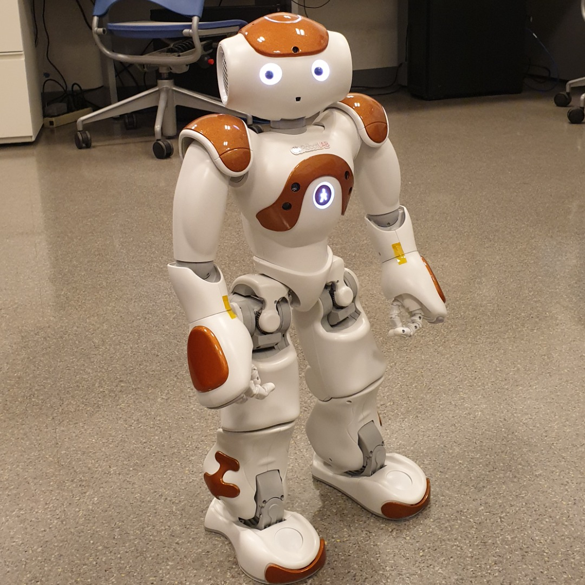
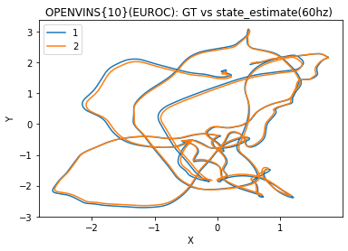
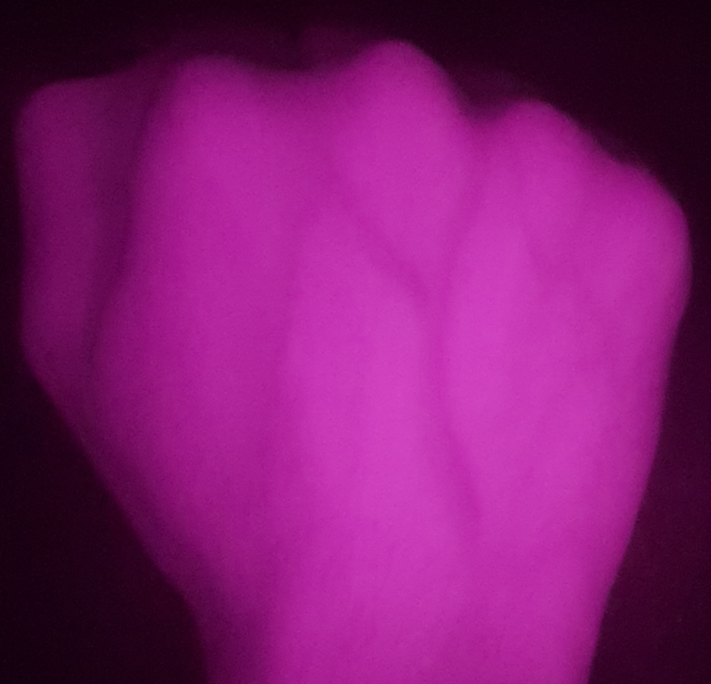
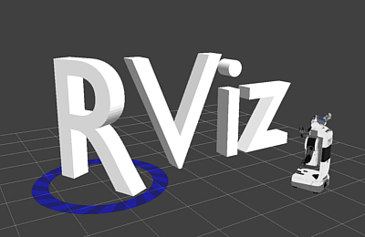
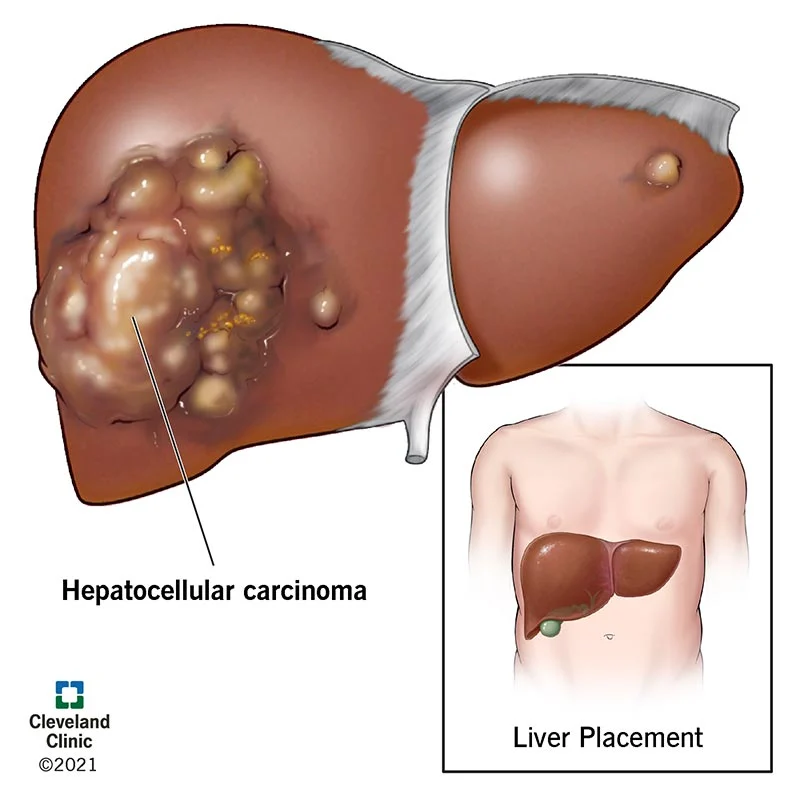

Current Focus
What I am building now and the problems I keep coming back to.
I am exploring
- Knowledge graphs built from public information and professional context.
- LLM inference layers that use RAM, VRAM, and GPU compute more intelligently.
- Reasoning-oriented neural architectures, including the idea of
IDEA-AS-A-TOKEN. - Neuromorphic computing as a reference point for future model design.
What guides my work
- I spend a lot of time reading research papers, then checking which ideas actually survive real systems.
- I borrow from strong engineering practices in distributed systems, databases, and infrastructure.
- I care a lot about clear separation of concerns, especially from the data side, because it makes system architecture easier to design, extend, and maintain.
- I like building systems that remove repetitive manual work and make people noticeably more effective in their day-to-day workflows.
Selected Systems & Open Source
Projects that reflect how I think about infrastructure, agents, and retrieval.
Open source
ModelServer
Docker-first LLM inference stack spanning CUDA and ROCm, covering vLLM, llama.cpp, deployment ergonomics, and model-serving evaluation.
CUDA
ROCm
vLLM
llama.cpp
View repository
Open source
Graphrag-OSS
GraphRAG stack built with ClickHouse, open-source LLM and embedding models for retrieval-heavy workflows.
GraphRAG
ClickHouse
Embeddings
View repository
Current systems work
Project-Pod
Early-stage work on building a knowledge graph from public professional information, with room for collaborators as it matures.
Knowledge Graph
LLM Inference
Query-Reranking
Private / ongoing
Education & Experience
A timeline of the systems, teams, and research tracks that shaped my work.
Recent work is front-loaded here, while older projects and publications are kept below in their own chronological archive.
Oct 2025 - Present
Applied ML Systems Project
Applied ML Systems Engineer
Designed semantic retrieval for long-form, heterogeneous documents using chunk-level embeddings, ANN search, agreement-based scoring, reranking, and local multi-GPU open-source model deployment.
Apr 2025 - Nov 2025
fundae.ai
Lead Cloud Solutions Architect | Founding Engineer
Led AI systems architecture for a B2B health-tech startup, mentoring early engineers and building a multi-threaded orchestration framework based on control signals and connected to Salesforce, M365, D365, and Trino.
Dec 2023 - Apr 2025
Cozeva
Machine Learning Engineer
Built HIPAA-compliant AI systems for enterprise healthcare workflows, including a GraphRAG-based medical coding agent, multimodal retrieval pipelines, FastAPI inference services, and FHIR-oriented integration work.
Feb 2024 - Feb 2025
dspcoder.com
Co-Founder
Built a cloud-based coding platform for embedded engineers, with workspaces for small projects focused on low-level fundamentals. Marked my first end-to-end cloud systems design effort on Microsoft Azure, where I co-designed the backend architecture with the founding team and helped shape the platform's question set.
Aug 2021 - Aug 2023
University at Buffalo
M.S. in Computer Science
Specialized in computer vision, deep learning for image processing, and robotics while working on biometrics, low-light enhancement, HRI, and SLAM research.
Feb 2022 - Dec 2023
University at Buffalo
Research Assistant
Published work in low-light enhancement and dorsal hand vein biometrics, built an HRI framework around GPT-3.5 and robotics APIs, and studied localization error in SLAM systems.
Jun 2022 - Aug 2022
Cozeva
Machine Learning Engineer Intern
Engineered data pipelines for large-scale patient records, extracted features for predictive models, and worked with Social Determinants of Health data in healthcare analytics.
May 2019 - Nov 2020
Tata Consultancy Services
Assistant Systems Engineer - Data Analytics
Supported GE Healthcare analytics workflows through Salesforce-based dashboards, client requirement analysis, and SQL/reporting optimization.
May 2015 - Apr 2019
University of Engineering and Management, Kolkata
B.Tech. in Computer Science and Engineering
Early focus on machine learning, image processing, and applied research, including published work in survival prediction and weather-related modeling.
Research & Earlier Work
Older research, projects, and publications kept in one chronological archive.
Some of these started as project work, some became publications, and a few were both. Keeping them in one place makes the progression easier to read.

2022 - 2023
Human-Robot Interaction Projects
Person-specific robot behaviors and authentication workflows built around NAO, Pepper, and Boston Dynamics Spot using face, voice, and control signals.

2022
Characterization of SLAM Systems
Detailed OpenVINS and EKF-SLAM study focused on ATE, hardware behavior, and comparisons against ORB-SLAM2 and other state-of-the-art systems.

2022
On Deep Learning for Dorsal Hand Vein Recognition
IEEE WNYISPW publication on dorsal hand vein biometrics using deep learning and infrared imaging.

2021
Robotics Algorithm Projects
Coursework around F1TENTH-style obstacle avoidance, Bug2 navigation, and A* path planning that deepened my interest in robot behavior and system dynamics.

2018
Hepatocellular Carcinoma Survival Prediction Using Deep Neural Networks
Early publication work on survival prediction for HCC patients using deep neural networks.